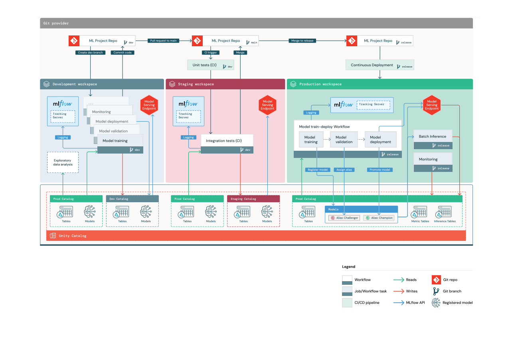

Reference Architecture MLOps, CI and CD with MLFlow
The reference architecture described outlines a deploy code workflow with a 1:1 mapping between environments and Unity Catalog, creating separate dev,
staging, and prod catalogs for corresponding development, staging, and production environments. In this setup, each environment mirrors a workspace,
allowing for the management of both data and models within each catalog.

The architecture permits assets in the prod catalog to be accessed from the development environment with proper permissions, typically granting read-only access to
prod catalog from the development setting to facilitate ML code development using production data. Data scientists can also load current production models for
comparison with new ones within the development environment, with model management facilitated by Unity Catalog and MLflow Tracking servers dedicated to each workspace. The document emphasizes that terminology and workflow, including environment names and Git branch management, may vary across organizations and should be adapted to meet the specific needs and circumstances of individual teams and projects.
In the following sections, we provide a detailed explanation of the precise steps in which code is moved across the three environments illustrated above.
At a high level, we have the following steps:
- Development: ML code is developed in the development environment, with code pushed to a dev (or feature) branch.
- Testing: Upon making a pull request from the dev branch to the main branch, a CI trigger runs unit tests on the CI runner and integration tests in the staging environment.
- Merge code: After successfully passing these tests, changes are merged from the dev branch to the main branch.
- Release code: The release branch is cut from the main branch, and doing so deploys the project ML pipelines to the production environment.
- Model training and validation: The model training pipeline ingests data from the prod catalog. Upon validating, the resulting model artifact is registered to the prod catalog. A “Challenger” alias is attached to the newly registered model version.
- Model deployment: A model deployment pipeline evaluates the current “Champion” model versus “Challenger” model, with the best-performing model version taking the “Champion” alias after this evaluation.
- Model inference: Model Serving or other inference pipelines load the “Champion” model to compute predictions. Predictions are logged to inference tables, which can be used to monitor the “Champion” model’s performance.
- Monitoring: Scheduled or continuous pipeline to refresh Lakehouse Monitoring metric tables. Inference tables are monitored to detect data or model drift. SQL dashboards are automatically created to display monitor metrics.